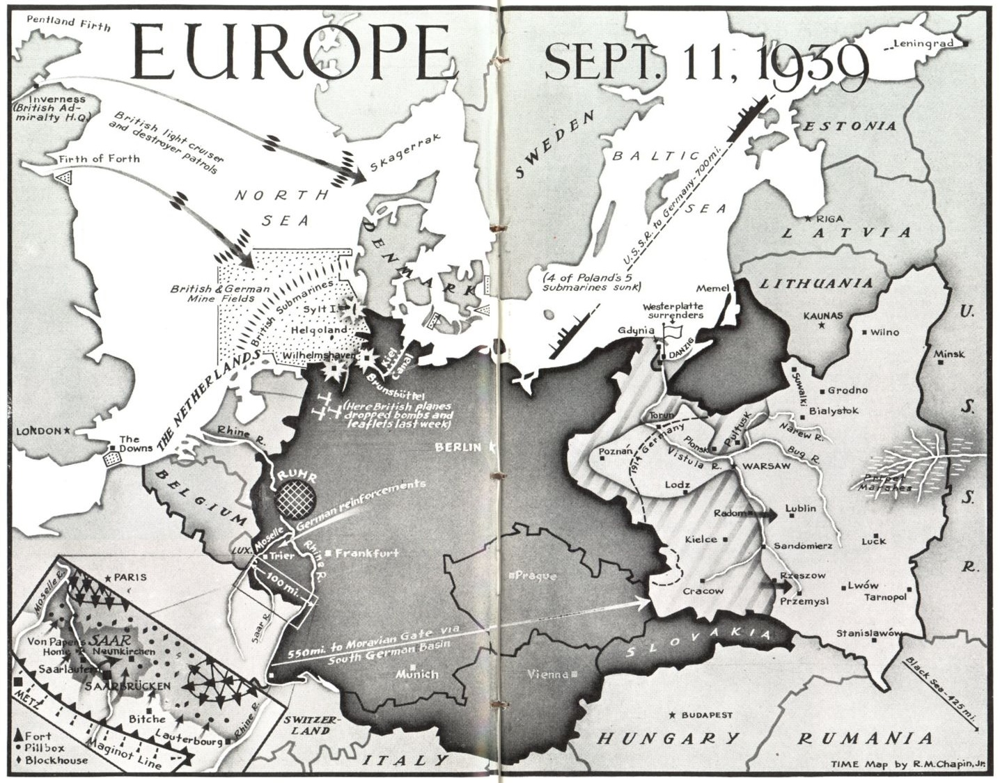

Batalla de Polonia
También conocida como la Invasión de Polonia, la Campaña de Septiembre o el Caso Blanco (Fall Weiss). Es el conflicto que dio inicio a la Segunda Guerra Mundial.
Datos
| Fechas | 1 de septiembre – 6 de octubre de 1939 (5 semanas) |
|---|---|
| Lugar | Segunda República de Polonia |
| Resultado | Victoria germano-soviética; ocupación y reparto de Polonia |
| Bandos | Alemania y Eslovaquia — y, desde el 17 de septiembre, la Unión Soviética — contra Polonia |
| Comandantes del Eje | Fedor von Bock, Gerd von Rundstedt (Alemania); Semión Timoshenko, Mijaíl Kovaliov (URSS) |
| Comandantes polacos | Edward Rydz-Śmigły, Wacław Stachiewicz |
| Fuerzas aprox. | ~1,5 millones (Alemania) y ~800.000 (URSS) frente a ~1 millón (Polonia) |
| Consecuencia directa | Reino Unido y Francia declaran la guerra a Alemania el 3 de septiembre de 1939 |
Introducción
El 1 de septiembre de 1939, la Alemania nazi invadió Polonia sin declaración de guerra previa. Dos días después, Reino Unido y Francia, que habían garantizado la independencia polaca, declararon la guerra a Alemania: había comenzado la Segunda Guerra Mundial. La campaña fue la primera demostración a gran escala de la Blitzkrieg ("guerra relámpago"), una doctrina basada en la concentración de blindados, aviación y comunicaciones para romper el frente enemigo con rapidez.
El 17 de septiembre, mientras Polonia aún resistía, la Unión Soviética invadió el país por el este en cumplimiento del protocolo secreto del pacto Molotov-Ribbentrop. Atrapada entre dos potencias y sin la ofensiva occidental que esperaba, Polonia fue derrotada y repartida en poco más de un mes.
Bando invasor
La invasión fue una acción combinada: Alemania atacó desde el oeste el 1 de septiembre y la Unión Soviética invadió desde el este el 17 de septiembre, según el reparto acordado en el pacto Molotov-Ribbentrop. Eslovaquia también aportó tropas junto a Alemania.
Invasión desde el oeste (1 sep)
Invasión desde el este (17 sep)
Polonia y sus aliados
Polonia no combatió sola en el plano diplomático: Reino Unido y Francia, garantes de su independencia, declararon la guerra a Alemania el 3 de septiembre de 1939, aunque no lanzaron una ofensiva terrestre efectiva a tiempo.
Nación invadida y defensora
Declaró la guerra (3 sep)
Declaró la guerra (3 sep)
Razones
- Espacio vital (Lebensraum): la ideología nazi buscaba expandir el territorio alemán hacia el este para colonizarlo, considerando a los pueblos eslavos como inferiores.
- Revisión del Tratado de Versalles: Alemania rechazaba las fronteras impuestas en 1919, en particular el "corredor polaco" que separaba Prusia Oriental del resto del país, y la ciudad libre de Dánzig (Gdańsk).
- El pacto Molotov-Ribbentrop (23 de agosto de 1939): el acuerdo de no agresión entre Alemania y la URSS incluía un protocolo secreto que repartía Europa oriental en zonas de influencia, dando vía libre a Hitler para atacar sin temor a un frente oriental soviético.
- Pretexto: Alemania orquestó incidentes fronterizos falsos (ver el ataque a la emisora de Gleiwitz en Teorías) para justificar la invasión ante su población.
Cuerpo (desarrollo)
La ofensiva alemana (Fall Weiss) comenzó al amanecer del 1 de septiembre con ataques simultáneos desde el norte (Prusia Oriental y Pomerania), el oeste (Silesia) y el sur (Eslovaquia). El acorazado Schleswig-Holstein abrió fuego sobre la guarnición polaca de Westerplatte, en Dánzig, en uno de los primeros disparos de la guerra. Ese mismo día, la aviación alemana bombardeó la localidad de Wieluń.
La Luftwaffe logró rápidamente la superioridad aérea, destruyendo buena parte de la fuerza aérea polaca y golpeando líneas de comunicación y suministro. Las divisiones Panzer penetraron con velocidad, envolviendo a los ejércitos polacos antes de que pudieran organizar una defensa estable en las fronteras, demasiado extensas.
Entre el 9 y el 19 de septiembre se libró la batalla del Bzura, el mayor contraataque polaco de la campaña, que sorprendió temporalmente al flanco alemán pero terminó siendo aplastado por la superioridad aérea y blindada. El 17 de septiembre, el Ejército Rojo cruzó la frontera oriental, hundiendo cualquier posibilidad de resistencia prolongada. El gobierno polaco se exilió.
Varsovia, sitiada y bombardeada, capituló el 28 de septiembre. Los últimos focos de resistencia, como la batalla de Kock, cesaron hacia el 6 de octubre.

Mapa de batalla de época: "Europe — Sept. 11, 1939" (mapa de la revista TIME por R. M. Chapin, Wikimedia Commons). Muestra la situación en plena invasión de Polonia: el avance alemán, la resistencia polaca, la Línea Maginot en Francia (recuadro) y las operaciones navales en el Mar del Norte. Leyenda original en inglés.
Conclusión
Polonia fue ocupada y repartida entre Alemania y la Unión Soviética según la línea acordada en el pacto Molotov-Ribbentrop. El país desapareció como Estado durante casi seis años y quedó sometido a una brutal ocupación. La invasión desencadenó la guerra mundial, aunque en el frente occidental siguió un periodo de inacción conocido como la "guerra de broma" (Phoney War) hasta la primavera de 1940.
- Inicio formal de la Segunda Guerra Mundial.
- Primera gran aplicación de la guerra relámpago.
- Comienzo de la ocupación y de las políticas de terror sobre la población polaca y judía (ver Sociedad).
Curiosidades
- El mito de la caballería contra los tanques: es falso que la caballería polaca cargara con lanzas contra carros de combate. El origen es un episodio en Krojanty donde la caballería atacó a infantería alemana; la propaganda posterior deformó el hecho.
- Wieluń, la primera ciudad bombardeada: el ataque a esta localidad sin apenas valor militar suele citarse como uno de los primeros bombardeos sobre población civil de la guerra.
- Los descifradores polacos: antes de la guerra, matemáticos polacos (Marian Rejewski y su equipo) ya habían roto versiones tempranas de la máquina Enigma y compartieron su trabajo con británicos y franceses, base del posterior éxito de Bletchley Park.
- Westerplatte: una guarnición de ~200 soldados polacos resistió siete días un asedio muy superior, convirtiéndose en símbolo de la resistencia nacional.
Teorías
Estos son debates e interpretaciones historiográficas, presentados como tales:
- El incidente de Gleiwitz: la noche del 31 de agosto, agentes de las SS simularon un asalto polaco a una emisora de radio alemana, dejando cadáveres con uniformes polacos (operación "Himmler"). Se considera un ejemplo temprano y documentado de operación de "falsa bandera" para justificar una guerra.
- ¿Pudo Occidente hacer más? Se debate si una ofensiva francesa decidida en el oeste en septiembre de 1939 (la breve ofensiva del Sarre fue muy limitada) habría aliviado la presión sobre Polonia. La mayoría de historiadores considera que llegó demasiado tarde y fue demasiado tímida.
- El papel soviético: historiográficamente se discute hasta qué punto la invasión soviética del 17 de septiembre fue una acción coordinada con Alemania o una anexión oportunista de territorios que la URSS consideraba dentro de su esfera. El protocolo secreto, negado durante décadas por Moscú, fue reconocido oficialmente en 1989.